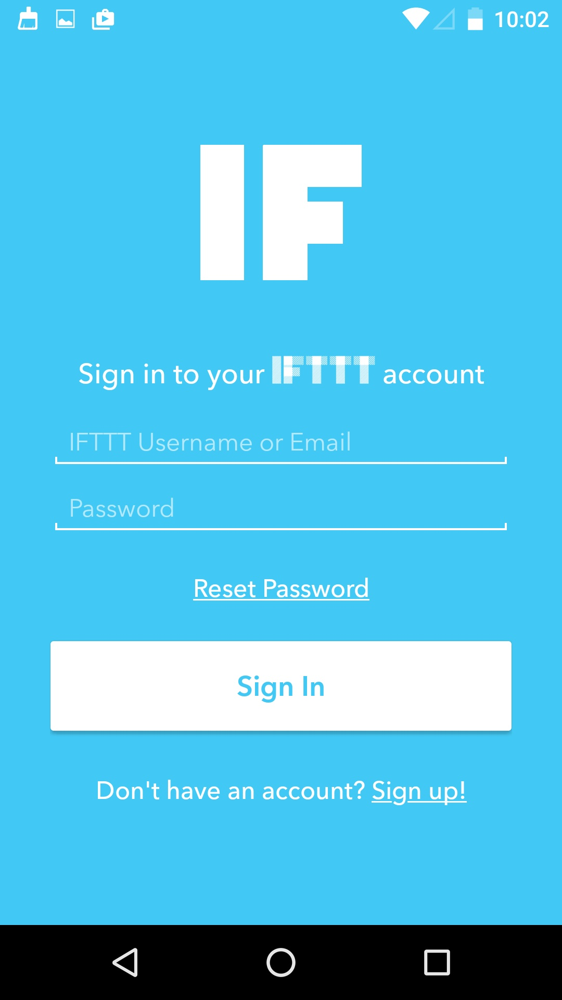
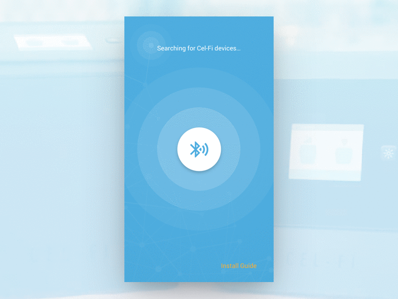
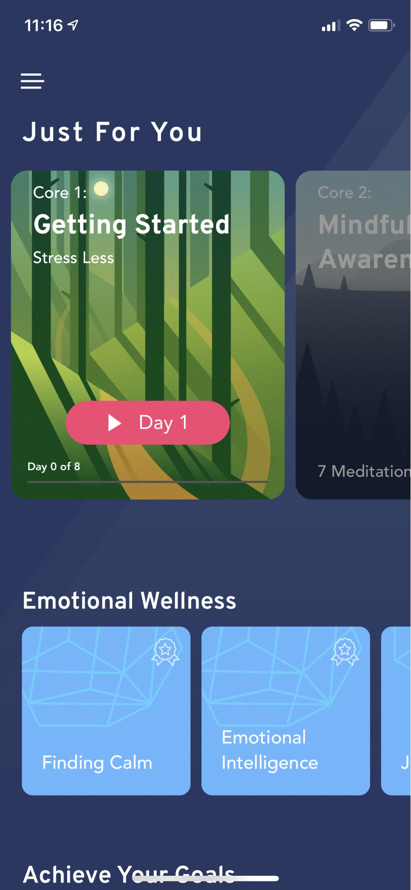
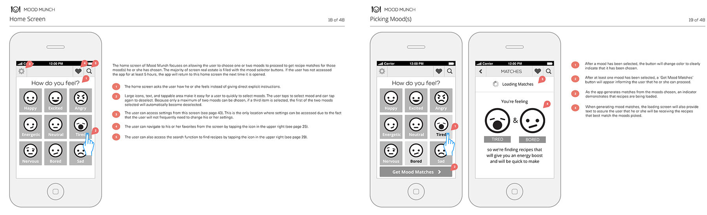
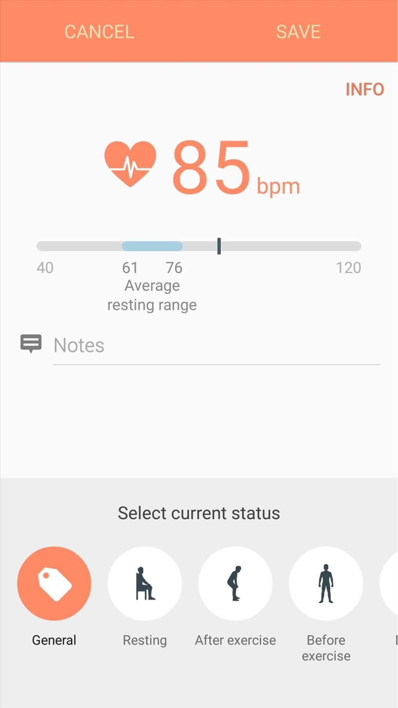
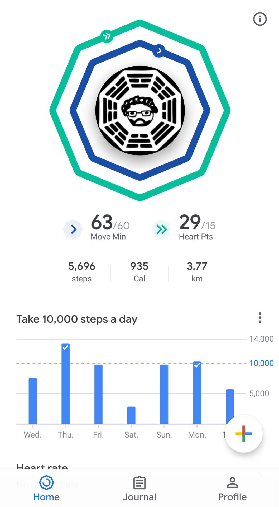
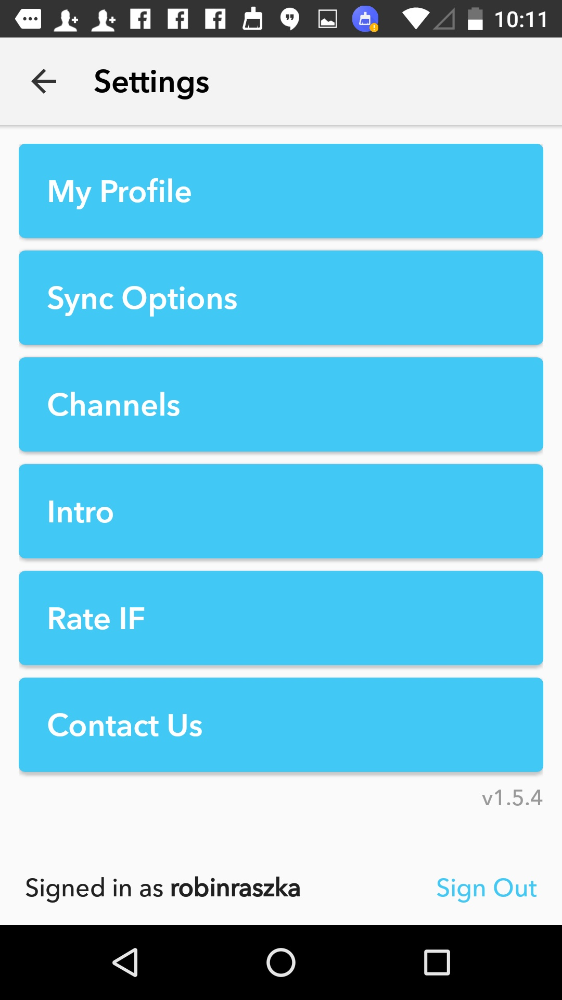
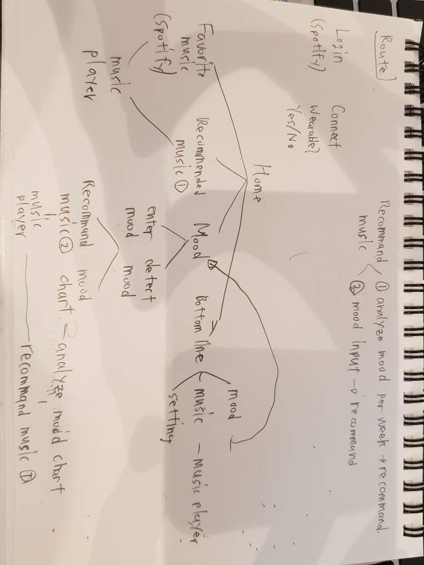

https://medium.com/korean-design-posts/%EB%AA%A8%EB%B0%94%EC%9D%BC-%EC%95%B1-%EB%94%94%EC%9E%90%EC%9D%B8%EC%9D%84-%EC%9C%84%ED%95%9C-%EB%B2%A4%EC%B9%98%EB%A7%88%ED%82%B9-%EC%82%AC%EC%9D%B4%ED%8A%B8-%EB%AA%A8%EC%9D%8C-7256232d58f4
https://lisa-chen.com/Mood-Munch
List of windows (like Android activities)
- MusicMe starter screen (splash screen)
- Effect of the logo appearing on a suitable background
- Login / registration - input Spotify account

- Change background color and icon of login window
- Connect Wearable
- 
- Home

- Favorite music
- Recommended music ( being updated whenever user analyze their mood )
- Mood ( icon )
- Bottom line : mood, music, setting
- Enter mood
——————————————————————————————————————————————-


- Detect mood
- 
- Instead of heartbeat, have mood
- In same window have ability to override the detected mood
- No Save button. Just detect mood and move on if user doesn’t pick to override mood.
- Music player
- Colour based on mood
- Single window for playlist (list of songs) and music player (playback buttons).
- Playlist features: Play/stop, next, previous, song time, song title, song picture.
- Mood chart

- Settings

Colour - blue/green
Universal feature - colour changes based on mood
Flow of UI:
